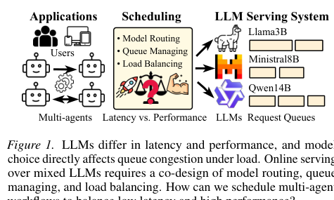
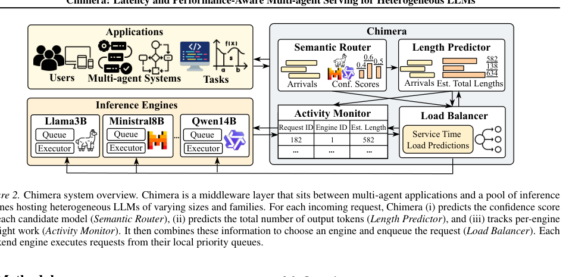
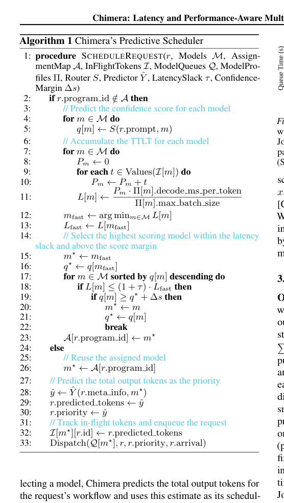
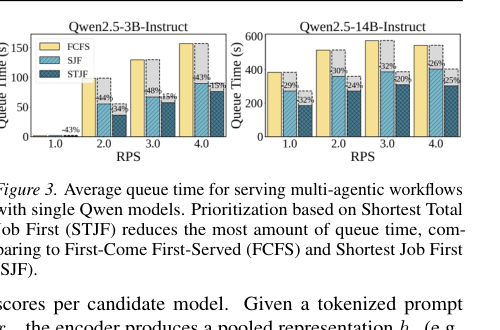
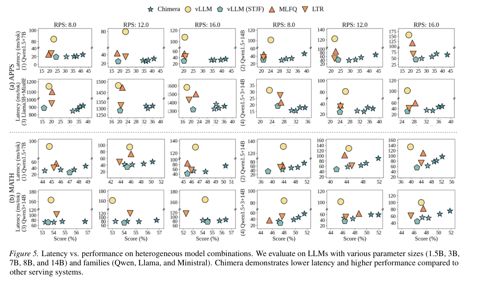

Chimera：面向异构 LLM 的延迟与性能感知多智能体服务中文翻译稿
摘要。Chimera 面向多智能体工作流在异构 LLM 集群上的 serving。多智能体应用通常由多个依赖阶段组成，每个阶段都是一次 LLM 调用，其输出会进入后续上下文。传统 serving 系统多假设同一模型的同构副本，无法同时利用不同模型在质量、速度和成本上的差异。Chimera 提出 predictive scheduling：用 semantic routing 估计请求在各模型上的置信度，用 length predictor 预测 workflow 剩余输出长度，用 activity monitor 估计各模型队列中的 token 负载，并用 load balancer 选择模型与服务实例。实验显示，在代码生成和数学推理工作流上，Chimera 能改善延迟-性能前沿，降低端到端延迟并提高任务性能。
1 动机
多智能体系统不再是单次对话请求，而是由多个 LLM 调用组成的依赖链或 DAG。例如代码生成可能包含需求分析、方案设计、实现、测试和修复；数学推理可能包含分解、求解、检查和合并。用户感知的是整个 workflow 的完成时间和最终答案质量，而不是某个中间 LLM 请求的局部 latency。
同时，LLM 部署越来越异构。小模型速度快但能力弱，大模型能力强但慢且容易排队。仅按“请求难度”选择模型会忽略负载；仅按“当前队列短”选择模型又可能牺牲质量。Chimera 要解决的是模型选择、排队拥塞和工作流剩余工作量之间的联动问题。

2 系统架构
Chimera 位于应用和 LLM serving backend 之间。应用提交多智能体 workflow，系统维护不同 LLM 的 serving engine。Semantic Router 为每个候选模型估计当前请求的任务适配度或 confidence；Length Predictor 预测该阶段以及剩余 workflow 的输出 token 数；Activity Monitor 跟踪各模型上 in-flight predicted token volume；Load Balancer 综合质量和拥塞信息进行调度。

这里的关键抽象是把模型队列状态表示为 token 级负载，而不是请求数。两个请求的 prompt/output 长度可能差别很大，单纯按 request count 负载均衡会误判排队时间。预测剩余输出长度还能帮助调度器区分短任务和长任务，减少工作流尾部等待。
3 Predictive Scheduler
Chimera 的 scheduler 会为候选模型计算综合效用：一方面，模型越有可能给出正确结果，性能得分越高；另一方面，模型当前和未来队列越拥塞，预期延迟越高。论文采用 shortest total job first（STJF）思想，优先服务预测剩余 token 更少的工作流，并加入 anti-starvation 机制，避免长任务一直被短任务挤压。


4 实验结果
论文在代表性 agentic workflow 上评估，包括 APPS 代码生成和 MATH 数学推理，并组合 Llama、Ministral、Qwen 等不同规模模型。对比包括单模型 serving、简单路由、队列感知策略和 vLLM 等。结果显示，Chimera 在相同或相近吞吐压力下能形成更好的 latency-performance frontier：相对竞争基线，端到端延迟降低约 1.2 到 2.4 倍，任务性能平均提升约 8.0 到 12.5 个百分点。

5 局限与启发
Chimera 的效果依赖 semantic router 和 length predictor 的准确性；若任务分布变化、模型质量估计错误或输出长度预测偏差大，调度决策会受影响。论文主要关注模型级异构和队列负载，没有深入处理 KV cache locality、跨 GPU/CPU 状态迁移、工具调用副作用或概率分支 DAG。
对本仓库方向的意义。Chimera 非常贴近“agentic workflow serving”选题。它把模型选择从单次 query routing 推进到 workflow-aware scheduling。可延伸的问题是：在 Chimera 的模型选择和负载预测之外，加入 KV/state cache 复用、conditional branch probability 和多级硬件 placement，形成更完整的 agent workflow scheduler。
参考说明
参考文献保留在原 PDF 中。本文覆盖摘要、动机、系统架构、预测式调度、实验结果和对后续研究的启发。